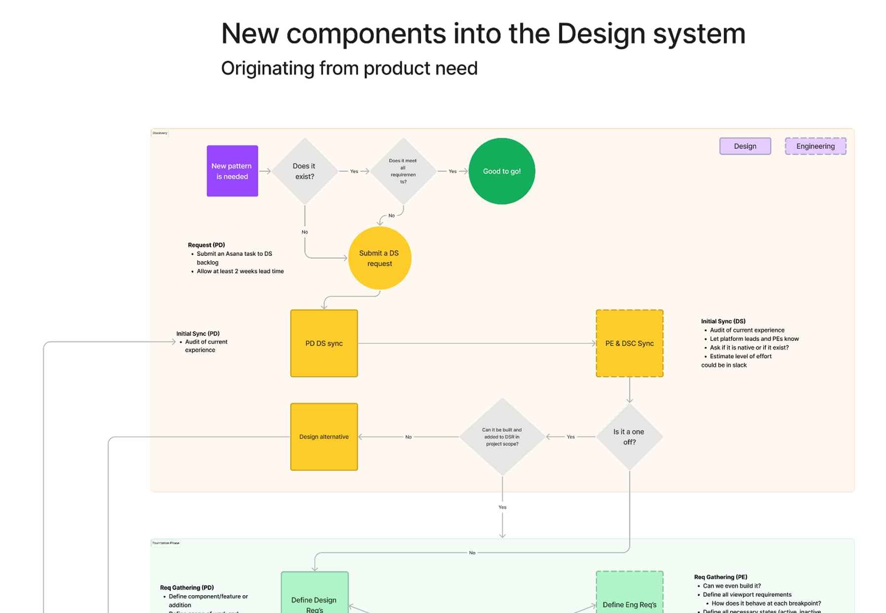
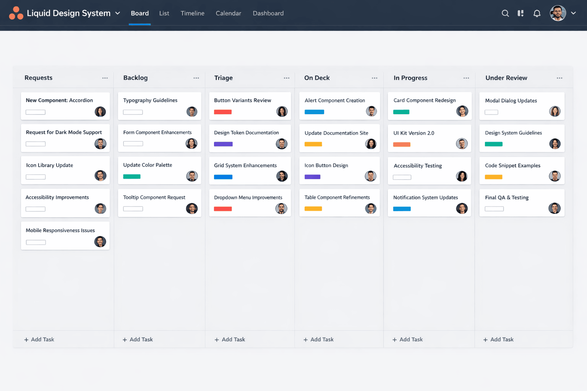
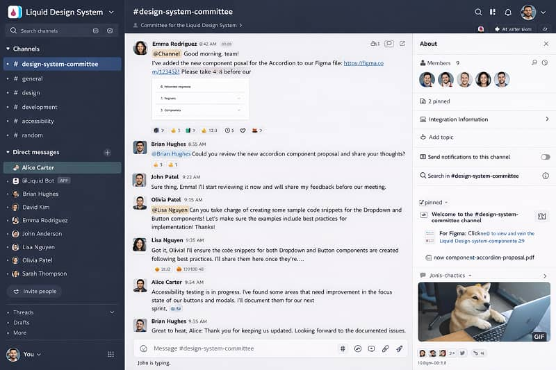
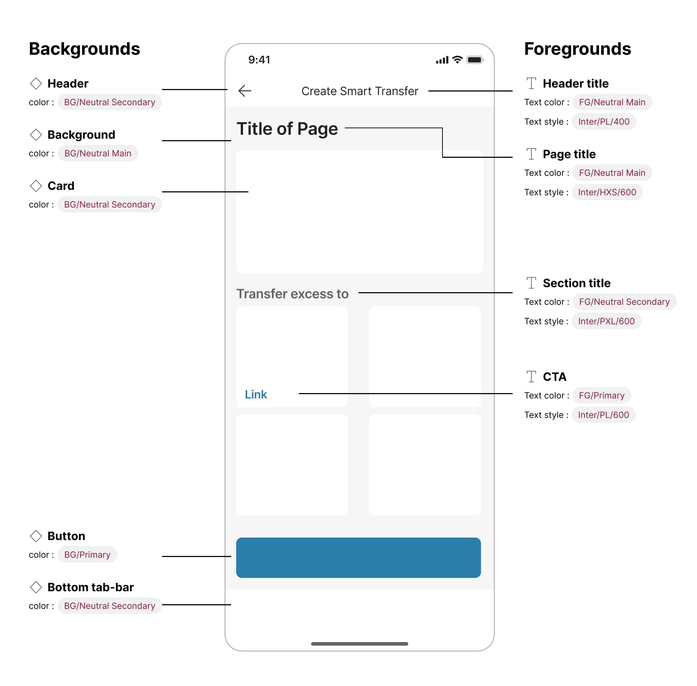
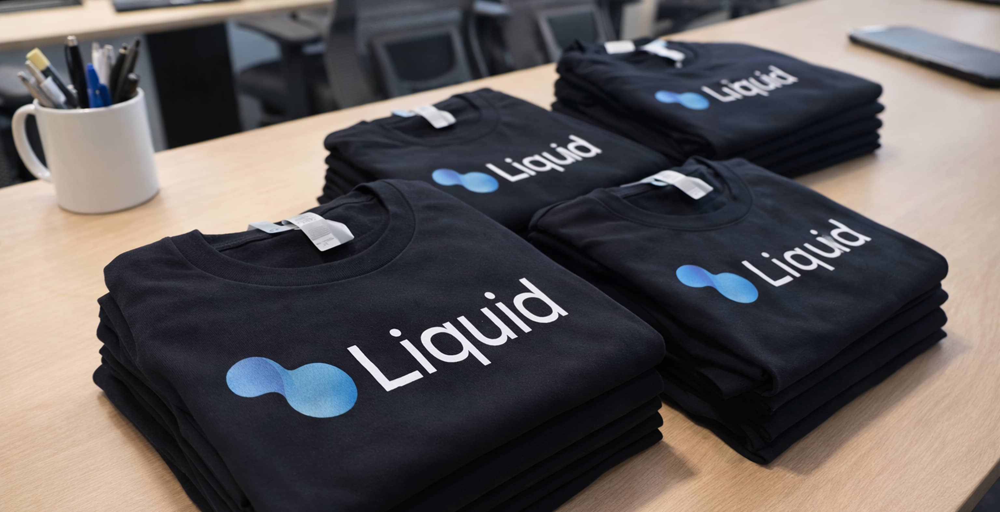

Case study ds/liquid · M1 Finance · 2022–2024
Building Liquid: M1's first design system
When I joined M1 Finance there was no design system — just duplicated work and inefficiency. I identified the gap, advocated for the investment, and built Liquid from the ground up. Within 12 months it reached 80% company-wide adoption and improved team efficiency by 30%, helping M1 ship faster in a competitive fintech market.

Impact
Outcomes
- 80%company-wide adoption across design and engineering
- 30%efficiency improvement — 2–3 days recovered per sprint, per team member
- −1 sprintsaved in foundational engineering time per initiative, with another saved in total development time
Design defects surfacing in QA dropped significantly, and teams stopped paying a per-project tax to rebuild foundations that already existed.
The problem
Moving fast, building slow
M1 operates in a fast-paced fintech environment where speed to market is critical. When crypto got hot, we needed to ship quickly to capitalize on market momentum — but our reality didn't match our ambitions. The team wasn't working inefficiently by choice; they lacked the infrastructure. We needed a design system, and no one had built one at M1 before.
What I observed
- Designers were rebuilding the same components repeatedly.
- Engineers spent 2–3 days per sprint — 20–30% of their time — clarifying design specs and fixing design defects in QA.
- There was no scalable foundation as the team grew from 3 to 11 designers.
- Our visual language didn't reflect our premium brand positioning.
Building the case
Data-driven advocacy
Securing organizational buy-in and resources required more than conviction — it required evidence. I surveyed designers and engineers across the company with specific questions: How much time per sprint do you spend clarifying design requirements? How often are design defects found in QA? What slows down your workflow?
The findings were clear: teams spent 2–3 days of every two-week sprint on avoidable design-related work — roughly 20–30% of their capacity.
Building coalition
I took a methodical approach to gaining support:
- Design leadership — presented my reasoning and data to my manager, who became an early champion.
- Design team — built alignment across the growing team through training.
- Engineering — demonstrated how a system would improve their efficiency and code quality.
The team was open-minded but inexperienced with design systems. I positioned Liquid not as a design tool, but as an investment in organizational efficiency.
Foundation
Building Liquid from zero
I established three north-star principles, aligned to our business and design principles, to guide every team decision:
-
principle/01
Upscale our design
Improve our design to reflect the premium brand — move beyond functional to inspirational.
-
principle/02
Empower teams
Help teams be more efficient and consistent, and eliminate duplicative work.
-
principle/03
Drive adoption
A design system is only valuable if it's used. Scale it across the organization.
Governance
Starting centralized, on purpose
I chose a centralized governance model intentionally:
- All contributions flowed through me for quality control.
- Engineers could propose components or follow a defined process to add to the backlog.
- I finalized components, documented them, and managed releases.

Prioritization framework
A simple two-question framework kept the backlog honest:
- Team demand — how many teams need this component?
- Project dependency — is this blocking a current initiative?
This kept us focused on high-impact work and prevented us from building components no one would use.

Establishing rituals
To maintain momentum and alignment, I created structure:
- Two weekly meetings — one for designers, one for engineering.
- Two Slack channels — announcements and async collaboration.
- Weekly updates — progress, upcoming work, and adoption metrics.

Governance · pinned layout test
Starting centralized, on purpose
01 / 03 — the model
Centralized by design
- All contributions flowed through me for quality control.
- Engineers could propose components or follow a defined process to add to the backlog.
- I finalized components, documented them, and managed releases.
02 / 03 — the backlog
A two-question prioritization framework
- Team demand — how many teams need this component?
- Project dependency — is this blocking a current initiative?
This kept us focused on high-impact work and prevented us from building components no one would use.
03 / 03 — the rituals
Structure that maintained momentum
- Two weekly meetings — one for designers, one for engineering.
- Two Slack channels — announcements and async collaboration.
- Weekly updates — progress, upcoming work, and adoption metrics.
The turning point
The 9-month redesign
While we built Liquid incrementally, adoption stayed slow. Components existed, but teams weren't consistently using them. We needed a catalyst.
Then the opportunity surfaced: executives wanted the product to match our premium brand. Engineering leadership supported overhauling the codebase to improve performance and reduce technical debt. Design leadership wanted the brand to feel more premium and trustworthy. I saw the chance to align all three initiatives with Liquid adoption.
The strategy: use the redesign as the vehicle to rebuild every pattern and style on top of Liquid.

Execution
Over nine months, I led the redesign while simultaneously:
- Redefining our foundational elements — color, typography, spacing.
- Rebuilding components to reflect our premium positioning.
- Documenting everything in both Figma and Confluence.
- Training designers and engineers on the new system.
This wasn't a visual refresh — it was a complete rearchitecture of how we built products at M1.


Results
Adoption through strategy, not mandate
We reached 80% company-wide adoption by tying Liquid to a strategic business initiative rather than asking teams to adopt it on faith.
For most of the project I operated solo — building components while managing governance, advocacy, and adoption. The dual role was demanding but strategic. The breakthrough came when I presented the 30% efficiency improvement to leadership: it unlocked resources, I was promoted to Design System Manager, and the team grew to include a designer and a PM for backlog management and communications.
Cultural shift
The impact went beyond metrics. Liquid became part of M1's identity — we even made t-shirts. It transformed how teams worked together and established design as a strategic function, not just a service organization. By the time I left, Liquid was being extended into marketing assets.

Reflection
It's really about people
The most important lesson: a design system is not a project with an end date. It's living infrastructure that evolves with the organization. Success isn't building it — it's maintaining momentum and adoption over time.
The technical work of building components is table stakes. The harder, more important work is:
- Building coalition across disciplines.
- Creating clear governance and contribution models.
- Maintaining adoption through education and advocacy.
- Tying the design system to strategic business initiatives.